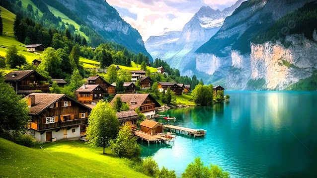
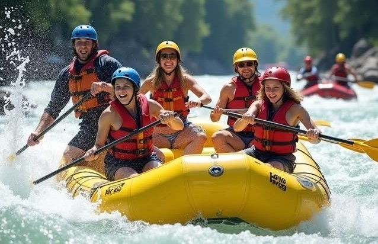

From the calm reflections of alpine lakes to the winding charm of historic canals,
waterways have always been the soul of travel. They whisper stories of history,
culture, and timeless adventures.


Tranquil Escapes
Imagine sitting beside a crystal-clear alpine lake, surrounded by snowy peaks.
The still water mirrors the sky, offering peace and silence that refreshes your soul.
“Every lake is like a mirror, reflecting not just the mountains, but the traveler’s own spirit.”
Adventurous Journeys
Kayaking, paddleboarding, or boating—waterways invite you to experience the thrill of adventure.
Each ripple carries you closer to discovery and excitement.
Cultural Connections
From the romantic canals of Venice to vibrant floating markets in Thailand,
waterways have always been the lifeline of civilizations and culture.
At GlideAway, we believe lakes and waterways aren’t just destinations—they’re experiences.
Every ripple tells a story, and every journey leads to serenity.